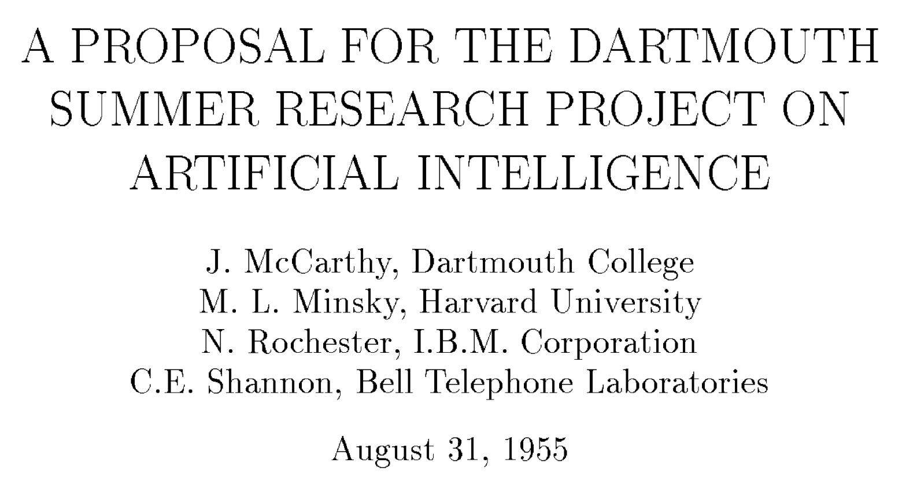
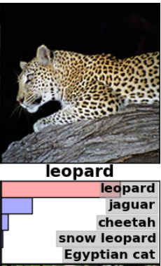

2026학년도 2학기 실전웹서비스개발
실전 웹서비스개발 – 9주차
인공지능의 발전과 에이전트를 활용한 웹 개발
LECTURE 09
01
인공지능의 출발과 데이터 학습
튜링의 모방 게임
‘기계가 생각하는가’를 문자 대화에서 관찰하고 비교할 수 있는 질문으로 전환
- 1950년 튜링의 제안 - 관찰할 수 있는 질문으로 전환
- ‘생각한다’의 뜻을 정하기 어려워, 대화에서 확인할 수 있는 행동에 초점
- 외모와 목소리의 단서를 가린 채 X와 Y의 문자 답변으로 판별
- 사람끼리 하는 게임 - 기계와 비교할 기준
- 사람이 질문자를 헷갈리게 할 때의 오답 빈도를 비교 기준으로 설정
- 게임 규칙 · 질문자는 두 응답자 중 여성을 맞히고, 남성은 오답을 유도
- 질문자가 두 응답자에게 문자로 질문하고 답변을 보고 판별
- 사람이 질문자를 헷갈리게 하는 조건을 기준으로 삼고, 그 역할을 기계로 바꿈
- 각 조건에서 질문자가 얼마나 자주 틀리는지 관찰
원문의 예시 질문 · “Will X please tell me the length of his or her hair?” (X의 머리카락 길이는 어느 정도인가요?)
다트머스 인공지능 연구 모임
기계의 행동을 관찰하는 질문에서 지능적 행동을 구현하는 공동 연구로
- 모임의 이유 - 지능 구현 가능성을 함께 탐구
- 학습과 지능의 특징을 정밀하게 기술하면 기계로 모사할 수 있다는 가설
- 여름 동안 함께 연구해 일부 문제에서 진전을 낼 수 있다는 기대
- 제안서의 연구 과제 - 기계가 수행할 지능적 활동
- 기계의 언어 사용과 추상화·개념 형성
- 문제 해결 · 모든 답 후보를 시험하는 것보다 효율적인 풀이 탐구
- 자기 개선 · 기계가 스스로를 개선할 방법 탐구

-
1955년
연구 목표 제안
-
1956년 여름
다트머스 연구 모임
기호 기반 인공지능 (Symbolic AI)
초기 AI의 한 가지 문제 해결 방식 · 사실을 기호로 표현하고 규칙으로 추론
- 지식 표현 - 풀이에 필요한 사실을 기호로 기록
- 대상에 이름을 붙이고 그 이름으로 대상의 속성을 표현
- 추론 - 기록한 사실에 규칙을 적용해 새 결론 도출
- 결론에 쓰인 사실과 규칙을 확인할 수 있음
-
기록한 사실
A · 도형의 이름 다각형(A) · A는 다각형 변의 수(A) = 3 · A의 변은 3개
-
사람이 작성한 규칙
변 3개인 다각형 → 삼각형
-
컴퓨터의 조건 확인
다각형 확인 · 변 3개 확인
-
도출한 결론
삼각형(A) · A는 삼각형
퍼셉트론 (Perceptron)
입력의 가중합을 임곗값과 비교하는 이진 판단의 기본 모형
- 가중합 - 입력의 영향을 합친 값
- 각 입력과 가중치의 곱을 더해 하나의 값 계산
- 가중치의 부호와 크기에 따라 입력의 영향 방향과 강도가 달라짐
- 임곗값 - 두 출력을 가르는 기준
- 가중합이 임곗값 이상이면 1, 그보다 작으면 0을 반환하는 이진 판단 예
- 입력 1 × 가중치 1, 입력 2 × 가중치 2
- 두 곱의 합으로 가중합 계산
- 가중합을 임곗값과 비교해 0 또는 1 출력
가중합 s = x₁ × w₁ + x₂ × w₂ · 출력 y = 1 (s ≥ θ), y = 0 (s < θ) x₁, x₂는 입력값 · w₁, w₂는 가중치 · θ는 임곗값
전문가 시스템 (Expert System)
기호 기반 AI의 응용 · 전문가의 판단 기준을 규칙으로 적용
- 지식 기반 - 전문가가 쓰는 사실과 판단 규칙의 저장소
- 특정 분야의 판단 기준을 ‘조건이 맞으면 → 결론’ 형태로 표현
- 추론 엔진 - 현재 사례에 적용할 규칙을 찾는 구성 요소
- 사례에서 확인한 사실을 규칙의 조건과 대조해 후보 도출
1970년대 스탠퍼드 MYCIN · 검사 소견으로 감염의 원인균 후보 추론
-
검사 소견 예시
그람 염색 · 음성 세균 모양 · 막대형 산소 조건 · 혐기성
-
지식 기반 · 규칙 036
세 조건이 모두 맞으면 Bacteroides를 후보로 고려
-
추론 엔진
소견을 규칙의 조건과 대조 이 예에서는 세 조건 모두 일치
-
원인균 후보
Bacteroides 규칙의 확신도 0.6
AI 겨울 (AI Winter)
AI 연구 지원과 투자가 줄어든 시기 · 전문가 시스템의 확산과 유지 부담
- XCON - 컴퓨터 주문에 맞춰 부품 구성을 정한 전문가 시스템
- DEC는 1980년부터 VAX 컴퓨터 주문을 처리하는 데 활용
- 유지 부담 - 제품과 부품이 바뀔 때마다 관련 규칙 수정
- 규칙을 바꾸면 기존 규칙과 어떻게 맞물리는지도 확인
- 1987년 보고 · 약 6,200개 규칙 중 매년 약 절반 변경
-
1950~1960년대
초기 AI 연구 성과 기계 지능에 대한 기대
-
1970년대
초기의 기대에 대한 회의 일부 연구 지원 위축
-
1980년대
전문가 시스템의 기업 도입 상용화 기대 회복
-
1980년대 후반
전문가 시스템의 유지 부담 연구 지원·민간 투자 다시 위축
머신러닝 (Machine Learning)
판단 기준을 얻는 또 다른 방법 · 데이터에서 과제에 필요한 패턴 학습
- 판단 기준 - 수집한 사례에서 학습
- 데이터 기반 학습은 초기 AI부터 연구한 접근
- 지도학습 - 레이블이 붙은 사례에서 분류 기준 학습
- 레이블은 학습 데이터에 붙인 정답 표시
-
터치 데이터 수집
화면 우하단의 팜 노이즈 데이터 기록
-
노이즈 영역 레이블링
수집한 데이터에서 팜 노이즈 영역 표시
-
SVM 학습
팜 노이즈와 정상 터치를 가르는 경계 학습
Support Vector Machine (SVM) · 두 부류를 가르는 경계를 학습할 때 여유 폭(마진)을 크게 두는 분류 방법
모델 추론 (Model Inference)
학습한 모델에 새 입력을 넣어 결과를 계산하는 과정
- 추론 - 학습한 모델로 예측값이나 분류 결과 계산
- 새 터치 데이터에 학습한 분류 기준을 적용
- 모델 사용 - 학습한 기준을 유지하며 새 결과 계산
- 터치 입력이 달라지면 같은 모델도 다른 결과를 낼 수 있음
-
새 터치 입력
휴대폰 사용 중 들어온 터치 데이터
-
학습된 SVM
학습한 경계로 팜 노이즈 여부 판정
-
입력 처리
팜 노이즈로 판정한 입력은 제외
딥러닝 (Deep Learning)
여러 층의 신경망으로 과제에 유용한 표현을 학습하는 접근
- 표현 학습 - 여러 층에서 얻는 과제 관련 특징
- 앞 층의 결과를 뒤 층의 더 복잡한 판단에 활용
- 과제에 유용한 표현을 데이터에서 함께 학습
- 성과의 조건 - 구조와 학습 환경의 결합
- 층의 수뿐 아니라 데이터·계산 자원·학습 방법도 필요
- 딥러닝은 신경망을 이용하는 머신러닝 접근에 포함
인간의 지능과 관련된 과제를 기계로 수행하는 연구 분야
데이터에서 판단 기준을 얻는 접근
가중치 · 앞 뉴런의 출력이 다음 뉴런의 계산에 얼마나 반영될지 정하는 연결선의 값
- 입력층 → 은닉층 1 → 은닉층 2 → 출력층
역전파 (Backpropagation)
예측 오차를 바탕으로 각 층의 가중치 조정 방향을 계산
- 손실 - 모델의 예측과 정답을 비교해 얻는 값
- 학습은 손실을 줄이는 방향으로 가중치를 조정
- 역전파 - 출력층부터 앞쪽 층으로 거슬러 계산
- 각 가중치를 조금 바꾸면 손실이 어떻게 달라질지 계산
-
예측 예시
정답 표범 · 예측 1위 재규어
-
손실 계산
정답과 예측 점수를 비교
-
역전파
출력층부터 가중치별 손실 영향 계산
-
가중치 갱신
손실을 줄이도록 가중치 조정
제프리 힌튼의 주요 공동 연구 1986년 · 럼멜하트·윌리엄스와 함께 역전파로 은닉층이 유용한 특징을 학습함을 보임 2006년 · 심층 신뢰망을 한 층씩 학습하는 방법 공동 제안 2012년 · 크리제브스키·수츠케버와 AlexNet 공동 연구

AlexNet의 이미지 분류 (Image Classification with AlexNet)
2012년 ImageNet 대회에서 성과를 낸 심층 신경망의 이미지 분류
- 이미지 분류 - 사진이 속할 범주를 예측
- 정답이 붙은 사진으로 학습하고 역전파로 가중치 조정 방향 계산
- 평가용 사진의 범주별 확률을 계산해 순위로 정리
- 2012년 ImageNet 대회 - 이미지 분류 부문
- 과제 · 같은 평가용 사진마다 1,000개 범주 중 최대 5개 후보 제출
- 채점 · 후보에 정답이 없으면 오답, 오답률이 낮을수록 상위
- 결과 · AlexNet 연구팀 1위 15.3% · 2위 26.2%

| 순위 | AlexNet의 예측 |
|---|---|
| 1 | 표범 · 정답과 일치 |
| 2 | 재규어 |
| 3 | 치타 |
| 4 | 눈표범 |
| 5 | 이집트 고양이 |
AlphaGo의 바둑 수 선택
신경망의 수·형세 평가와 탐색을 결합한 다음 수 선택
- 후보 평가 - 사진의 범주에서 바둑의 다음 수로
- AlexNet은 사진에서 범주 후보의 확률을 계산
- AlphaGo는 바둑판을 보고 둘 수 있는 수를 평가
- 탐색 - 상대의 응수에 따라 달라지는 전개 비교
- 기보와 자기 대국으로 학습한 신경망을 탐색에 활용
- 후보 수와 상대 응수를 반복해 살피고 평가를 모아 한 수 결정
- 현재 바둑판에서 시작
- 정책 신경망의 후보별 확률로 탐색할 수의 우선순위를 정함
- 후보 A·B에 상대가 응수한 뒤의 바둑판에서 가치 신경망으로 승리 가능성을 추정
- 여러 전개의 평가를 모아 실제로 둘 한 수를 선택
02
언어 모델에서 코딩 에이전트로
언어 모델 (Language Model)
주어진 문맥에서 어떤 텍스트가 들어맞을지 계산하는 모델
- 후보 평가 - 바둑의 다음 수에서 문장의 다음 표현으로
- AlphaGo는 바둑판을 보고 다음에 둘 수를 평가
- 언어 모델은 문장 앞부분을 보고 이어질 표현의 가능성을 계산
- 문맥의 역할 - 앞부분에 따라 달라지는 후보의 가능성
- 학습한 텍스트 패턴을 바탕으로 주어진 문맥에 어울리는 표현을 평가
| 이어질 표현 예시 | 오늘 수업에서는… | 오늘 자바스크립트 실습에서는… |
|---|---|---|
| 인공지능을 배운다 | 자연스러운 후보 | 실습 주제와 연결이 약한 후보 |
| 함수를 작성한다 | 자연스러운 후보 | 실습 주제에 더 어울리는 후보 |
토큰 (Token)
이어질 표현을 예측할 때 모델이 문맥을 읽는 단위
- 토큰 - 모델이 문맥을 읽는 기본 단위
- 이어질 표현을 예측하기 전에 문맥을 토큰으로 분할
- 정해진 토큰 목록의 조각을 조합해 다양한 단어를 표현
- 토큰 ID - 각 토큰을 식별하는 번호
- 임베딩은 모델이 학습한 계산용 숫자 배열
- 모델은 토큰 ID로 해당 임베딩을 찾아 계산에 사용
unhappy!
-
un
ID 359
-
happy
ID 57621
-
!
ID 0
un → ID 359 → un의 임베딩 → 모델 계산
토큰 기준 API 비용 - 모델이 읽은 입력 토큰과 생성한 출력 토큰으로 사용량 집계 이 예시는 입력 3토큰 · 입력·출력 토큰 수에 각각의 단가를 곱해 합산
어텐션 (Attention)
관련도에 따라 다른 토큰 위치의 정보를 가중해 반영하는 계산
- 어텐션 - 위치 간 관련도로 정보의 비중을 계산
- 토큰의 임베딩을 출발점으로 각 위치의 표현을 계산
- 현재 위치와 다른 위치의 관련도를 계산해 가중치를 정함
- 가중합 - 가중치를 곱한 정보를 더해 새 표현 구성
- 예시에서 ‘그 위’의 ‘그’는 빗방울이 닿는 우산을 가리킴
- ‘그’의 새 표현에 ‘민수’보다 ‘우산’ 쪽 정보를 더 많이 반영
- 예시 · 민수는 우산을 폈다. 빗방울이 그 위로 떨어졌다.
- ‘우산’에서 가져온 정보에는 큰 가중치, ‘민수’에서 가져온 정보에는 작은 가중치를 곱함
- 가중치를 곱한 정보를 더해 ‘그’ 위치의 새 표현을 만듦
트랜스포머(Transformer)
어텐션과 위치별 표현 변환을 층으로 반복하는 신경망 구조
- 트랜스포머 한 층 - 어텐션과 위치별 표현 변환
- 어텐션은 ‘그’에 우산 정보를 반영하듯 위치 사이의 정보를 섞음
- 이어지는 표현 변환은 섞인 정보를 각 위치에서 따로 가공
- 층의 반복 - 문맥이 반영된 표현을 다시 계산
- 1층이 만든 토큰 표현을 2층의 입력으로 전달
- 2층은 이미 문맥을 담은 표현들 사이의 관계를 다시 계산
- 학습 중 같은 층 안의 여러 토큰 위치는 병렬 처리
- 토큰 임베딩에 위치 정보를 더해 첫 번째 층에 전달
- 1층에서 어텐션으로 정보를 섞고 각 위치의 표현을 따로 변환
- 1층 출력을 받은 2층은 이미 문맥을 담은 표현 사이의 관계를 다시 계산한 뒤 위치별로 변환
- 이 과정을 거쳐 문맥을 반영한 토큰 표현을 얻음
GPU가 적합한 이유 · 여러 연산 코어로 행렬 계산을 병렬 처리
다음 토큰을 이용한 텍스트 생성 (Next-Token Text Generation)
선택한 토큰을 문맥에 추가하며 출력을 순서대로 생성
- 다음 토큰 예측 - 트랜스포머의 출력 표현을 활용
- 문맥이 반영된 표현으로 다음 토큰 후보의 확률을 계산
- 후보의 확률을 바탕으로 토큰 하나를 선택
- 반복 생성 - 방금 고른 토큰을 다음 입력에 포함
- 기존 문맥 뒤에 선택한 토큰을 붙여 다음 예측에 사용
- 모델 가중치를 유지한 채 종료 조건까지 한 토큰씩 추가
- 첫 번째 예측 · I like에 이어질 후보의 확률을 계산하고 앞 공백을 포함한 ␠cats를 선택
- ␠cats를 붙인 I like cats가 두 번째 예측의 입력이 됨
- 두 번째 예측 · 마침표를 선택해 붙이면 I like cats.가 됨
코드 자동 완성 (Code Completion)
편집 중인 코드의 주변 문맥을 바탕으로 다음 코드 제안
- 코드 자동 완성 - 커서 위치에 들어갈 코드 토큰 예측
- 함수 이름·매개변수·주석을 문맥으로 활용
- 이어질 코드 토큰을 생성해 커서 위치에 제안
- 2021년 Copilot 기술 프리뷰 - 편집기 내 생성 사례
- 작성 중인 코드를 바탕으로 다음 줄이나 함수 전체를 제안
-
제안 표시
작성한 코드와 주석을 바탕으로 return 줄 표시
-
개발자 선택
수락 · 수정 · 거절, 적용한 코드는 실행해 확인
대화형 개발 지원 (Conversational Development Assistance)
자연어 요청과 후속 대화로 코드의 조건과 응답을 구체화
- 대화형 개발 지원 - 원하는 코드 동작을 자연어로 요청
- 자동 완성에서 본 hasTitle의 동작을 대화로 요청
- 후속 요청에서 길이 조건을 추가해 코드 제안을 수정
- 공개 사례 - 대화로 코드 작성과 수정 요청
- 2022년 ChatGPT의 코드 오류 대화와 2023년 Copilot Chat 소개
-
첫 요청
제목이 빈 문자열이 아니면 true를 반환하는 hasTitle 함수를 만들어줘.
-
첫 제안
return title.length > 0; -
후속 요청
제목의 길이가 20을 넘으면 false로 처리하는 조건도 추가해줘.
-
수정 제안
return title.length > 0 && title.length <= 20;
프롬프트 설계 (Prompt Engineering)
목표·제약·기대 결과를 요청에 담아 구현할 동작을 구체화
- 프롬프트 설계 - 대화에서 정한 조건을 한 요청에 담기
- hasTitle의 길이 제한에 앞뒤 공백 처리 기준을 더해 전달
- 함수의 입력과 반환값을 함께 명시
- 입출력 예시 - 입력별로 기대하는 반환값을 제시
- 앞뒤에 공백이 있는 제목과 공백만 있는 문자열을 함께 제시
| 요청 요소 | 실제 요청 문장 |
|---|---|
| 목표와 입력 | 문자열 title을 받아 게시글 제목이 유효한지 검사하는 hasTitle 함수를 만들어줘. |
| 제약 | 제목의 앞뒤 공백을 제거한 뒤, 그 문자열의 length가 1~20인지 확인해줘. |
| 기대 결과 | 조건을 만족하면 true, 그 외에는 false를 반환해줘. |
| 입출력 예시 | 예를 들어 " 공지 "를 넣으면 true, 공백 3개만 넣으면 false가 나와야 해. |
실행 결과에 근거한 코드 수정
hasTitle에 공백 3개를 넣어 실행하고, 결과를 근거로 수정 요청
- 실행할 코드 - 22쪽의 hasTitle 수정 제안
- 길이만 비교하는 코드에 23쪽 예시인 공백 3개를 입력
- 비교 기준 - 23쪽에서 정한 제목 검사 조건
- 앞뒤 공백을 제거한 뒤 길이가 1~20이면 통과
hasTitle 실행 · 공백 3개 입력
function hasTitle(title) {
return title.length > 0 && title.length <= 20;
}
console.log(hasTitle(' ')); // true
| 공백 3개 입력 | 실제 · 22쪽 코드 | 기대 · 23쪽 요청 |
|---|---|---|
| 검사하는 길이 | 3 · 입력 그대로 | 0 · 앞뒤 공백 제거 후 |
| 반환값 | true · 통과 | false · 거부 |
수정 요청 “hasTitle에 공백 3개를 넣었더니 true가 나왔어. 앞뒤 공백을 제거한 뒤 길이를 검사해 false가 나오게 수정해줘.” 수정 후 재실행 · 공백 3개 → false · “ 공지 ” → true
도구 호출 (Tool Calling)
모델이 작업을 요청하고 실행 환경이 도구를 실행해 결과를 전달
- 도구 호출 - 외부 도구로 개발 작업을 이어가는 방법
- 코드를 작성·수정한 뒤 도구로 검사나 기록을 수행
- 모델이 도구 이름과 실행에 필요한 값을 요청으로 전달
- 실행 환경 - 요청을 수행하고 결과를 모델에 연결
- 실행 환경은 허용된 요청에 한해 실제 도구를 실행
- 도구의 출력을 모델에 돌려줘 응답이나 다음 판단에 활용
-
모델의 요청
24쪽의 제목 검사 수정분 커밋 요청
-
실행 환경의 작업
허용 여부를 확인하고 준비된 변경분을 커밋
-
모델에 결과 전달
실행 환경이 성공 여부와 실행 출력을 전달
모델 → 실행 환경 · 터미널 도구 요청 예시
{
"name": "terminal",
"arguments": {
"command": "git commit -m \"Fix title check\""
}
}
실행 환경 → 모델 · 성공 시 반환 예시
{
"exit_code": 0,
"output": "Commit created"
}
에이전트 루프 (Agent Loop)
도구 실행 결과를 관찰해 다음 행동이나 종료를 결정
- 에이전트 루프 - 도구 결과로 다음 행동을 결정
- 25쪽처럼 실행 환경이 도구 결과를 모델에 반환
- 완료 판단 - 두 입력의 실제값을 기대값과 비교
- 공백 제목과 정상 제목이 모두 기대한 값을 반환하는지 확인
- 실행 환경이 공백 3개와 정상 제목으로 제목 검사를 실행하고 결과를 돌려줌
- 기대값과 다르면 코드를 수정하고 같은 두 입력으로 재실행
- 두 입력의 실제값이 기대값과 일치하면 완료를 보고
| 제목 검사 입력 | 기대값 | 수정 전 실제값 | 수정 후 실제값 |
|---|---|---|---|
| 제목 검사 입력 공백 3개 | 기대값 false | 수정 전 실제값 true | 수정 후 실제값 false |
| 제목 검사 입력 정상 제목 “ 공지 ” | 기대값 true | 수정 전 실제값 true | 수정 후 실제값 true |
모델 컨텍스트 프로토콜 (Model Context Protocol, MCP)
AI 앱을 외부 도구와 자료에 연결하는 공통 규약
- 공통 연결 규약 - 서로 다른 도구와 같은 방식으로 통신
- 26쪽의 제목 검사 작업에 필요한 파일 읽기와 검사 기능을 연결
- 서버에 제공 기능을 묻고, 요청과 결과를 같은 MCP 규약으로 교환
- 연결 관리 - 호스트가 서버마다 클라이언트를 연결
- 각 클라이언트는 담당 서버에 요청을 보내고 결과를 받음
- 호스트는 받은 결과를 모델의 다음 판단에 활용
- 호스트인 AI 개발 앱이 서버별로 클라이언트를 연결하고, 받은 결과를 모델에 전달
- 클라이언트 A ↔ 파일 서버 · MCP로 코드 읽기 요청을 보내고 파일 내용을 받음
- 클라이언트 B ↔ 검사 서버 · 같은 MCP 규약으로 제목 검사 실행과 두 입력의 반환값 교환
03
에이전트에 맥락과 작업 기준을 주는 방법
컨텍스트 윈도 (Context Window)
한 요청에서 모델이 처리할 수 있는 토큰의 범위
- 컨텍스트 윈도 - 한 요청에서 처리할 토큰의 한도
- 지침·대화·코드·도구 결과를 입력 문맥에 함께 포함
- 저장된 기록 전체와 지금 모델에 전달된 문맥을 구분
- 컨텍스트 롯 (Context Rot) - 긴 문맥의 성능 저하
- 한도 이내에서도 필요한 조건을 놓치거나 잘못 연결할 가능성
- /compact - 대화를 요약해 문맥 공간 확보
- Codex CLI·Claude Code의 대화 입력창에서 실행
- 같은 작업을 이어갈 때 활용 · 요약 후 핵심 조건 재확인
- 지침 · 행사 안내 답변
- 앞 대화 · 방문 날짜
- 자료 · 일정표와 장소 조회
- 질문 · 우천 시 장소
- 응답을 생성할 공간
컨텍스트 엔지니어링 (Context Engineering)
제한된 문맥에 필요한 정보를 담고 작업 진행에 맞춰 갱신
- 컨텍스트 엔지니어링 - 모델이 참고할 자료를 선택·갱신하는 설계
- 문맥 한도와 컨텍스트 롯을 고려해 현재 판단에 필요한 정보 선별
- 지침·관련 코드·실행 결과를 함께 제공해 판단의 근거 구성
- 문맥 관리 - 필요한 자료는 조회하고 누적된 기록은 정리
- 코드 수정과 재실행 뒤 바뀐 코드·새 결과를 문맥에 반영
다크 모드가 새로고침 뒤 풀리는 오류 · 문맥 구성 예시
-
관련 자료 선택
테마 설정 코드·저장 규칙·재현 순서 상품 이미지와 결제 기록은 제외
-
현재 문맥 구성
요구 · 선택한 테마 유지 현상 · 새로고침하면 밝은 화면 코드 · 저장값을 읽는 위치
-
실행 후 갱신
변경한 코드·새 관찰 결과 반영 재확인 · 새로고침 후 선택 유지
저장소 지침 (Repository Instructions)
반복해서 필요한 지침을 파일로 남겨 작업 문맥에 재사용
- 저장소 지침 - 에이전트의 공통 작업 규칙
- Markdown 파일에 반복할 규칙과 참고 문서 위치를 기록
- 지침 파일 예 · Codex: AGENTS.md · Claude Code: CLAUDE.md
- 지침의 적용 - 파일 내용을 모델의 작업 문맥에 포함
- 작업 위치에 적용되는 지침을 읽어 반복 작업에 활용
- 에이전트는 안내된 문서를 조회하고 검사·보고 규칙을 적용
레시피 서비스의 작업 규칙 · AGENTS.md / CLAUDE.md 본문 예시
# 레시피 서비스 작업 규칙 - 화면은 src/components의 공용 컴포넌트를 재사용한다. - 재료 단위는 docs/units.md의 표기를 따른다. - 코드를 변경한 뒤 npm test로 검사한다. - 변경 파일과 확인한 결과를 보고한다.
에이전트 스킬 (Agent Skills)
특정 작업의 절차와 필요한 자료를 묶어 재사용
- 에이전트 스킬 - 특정 작업에 맞춰 선택하는 절차 묶음
- SKILL.md에 사용 조건과 수행 방법을 기록하고 필요한 자료를 함께 구성
- 선택적 읽기 - 필요한 절차를 작업 문맥에 추가
- 이름·설명으로 적합성을 판단한 뒤 선택한 SKILL.md 본문을 읽음
- 31쪽의 공통 지침을 바탕으로 현재 작업에 맞는 수행 방법을 추가
release-notes/SKILL.md · 설명용 예시
--- name: release-notes description: 새 버전의 변경 안내를 작성할 때 사용 --- 1. changes.txt의 변경과 근거 링크를 확인한다. 2. 새 기능과 오류 수정을 나눠 정리한다. 3. release-notes.md 초안을 작성한다.
-
사용 조건 확인
새 버전의 변경 안내 작성 요청
-
SKILL.md 본문 읽기
분류·요약·작성 순서 확인
-
필요한 자료 활용
changes.txt에서 변경 근거 조회
명세 주도 개발 (Spec-Driven Development)
기능의 동작을 명세로 합의하고 계획·구현·검증의 기준으로 활용
- 명세 주도 개발 - 합의한 명세를 기준으로 개발하는 방식
- 기능의 입력·동작·거부 조건을 정하고 계획·구현·검증에 활용
- 스킬과 명세 - 작업 절차에 기능의 목표를 연결
- 스킬은 수행 절차를 제공 · 명세는 이번 기능의 목표 동작을 정의
스터디룸 예약 · 명세를 개발에 사용하는 흐름 예시
-
명세 합의
입력 · 방·날짜·1시간 슬롯 빈 슬롯 예약·내 예약 목록 표시 같은 방·날짜·슬롯의 중복 거부 본인 예약 취소 후 슬롯 재개방
-
구현 계획
예약 상태·소유자 데이터 설계 중복 확인·저장 처리 설계 예약 목록·취소 화면 설계
-
구현·검증
계획에 따라 예약 기능 구현 정상 예약·내 목록 표시 확인 중복 거부·취소 후 재예약 확인
2025년 9월 공개 · GitHub Spec Kit는 명세 기반 개발을 돕는 도구 모음
완료 기준
기능의 요구사항을 관찰할 수 있는 입력·결과·확인 근거로 구체화
- 관찰 가능한 조건 - 완료 판단의 기준
- 명세의 동작을 입력·결과·확인 근거로 구체화
- 정상 사용뿐 아니라 거부·실패 상황도 포함
- 완료의 증거 - 요구한 결과를 다시 확인할 근거
- 화면 표시와 실제 저장 상태를 각각 확인
프로필 사진 변경 · PNG·최대 2MB를 허용하는 수업용 기준
| 입력·상황 | 기대 동작 | 확인 근거 |
|---|---|---|
| 1MB PNG 선택 | 사진 저장·프로필 갱신 | 새로고침 뒤 같은 사진 표시 |
| 3MB PNG 선택 | 용량 초과 안내·기존 사진 유지 | 오류 문구·저장된 사진 미변경 |
| 업로드 중 서버 실패 | 실패 안내·재시도 제공 | 실패 응답·성공 표시 없음 |
04
에이전트가 구현하고 검증하는 환경
작업 분해
구현 계획을 결과와 검증 방법이 분명한 변경 단위로 구분
- 작업 단위 - 결과를 확인할 수 있는 변경 범위
- 큰 기능을 입력·산출물·확인 방법이 분명한 단위로 구분
- 의존 관계 - 앞 작업의 결과를 다음 작업에 연결
- 다음 작업이 필요로 하는 데이터 형식과 동작을 먼저 결정
- 각 산출물을 모아 전체 기능의 완료 기준과 대조
교내 분실물 검색 기능 · 의존 관계에 따른 작업 분해 예시
| 작업 | 필요한 입력 | 산출물 | 확인 방법 |
|---|---|---|---|
| 작업 검색 처리 | 필요한 입력 분실물 목록·검색어 | 산출물 이름이 일치하는 결과 목록 | 확인 방법 일치 결과 있음·없음 비교 |
| 작업 검색 화면 | 필요한 입력 검색 처리의 입력·출력 형식 | 산출물 검색창·결과 카드 | 확인 방법 입력한 검색어에 맞는 카드 표시 |
| 작업 빈 결과 안내 | 필요한 입력 검색 결과가 빈 목록인 경우 | 산출물 안내 문구·검색어 초기화 | 확인 방법 초기화 뒤 전체 목록 표시 |
자동화 테스트
미리 정한 입력으로 코드를 자동 실행하고 실제 결과를 기대값과 비교하는 검사
- 기대값 비교 - 반복 가능한 프로그램 검사
- 준비한 입력의 실제 결과를 고정된 기대값과 비교
- 경계값 - 동작이 달라지는 조건의 바로 전·해당 값·바로 다음
- 변경 후 같은 검사로 조건의 누락이나 기존 동작의 손상 탐지
배송비 정책 · 30,000원 이상 무료, 미만은 3,000원인 수업용 예시
delivery-fee.mjs · 0 이상인 정수 금액 입력
import assert from 'node:assert/strict';
function deliveryFee(total) {
return total >= 30000 ? 0 : 3000;
}
assert.equal(deliveryFee(29999), 3000);
assert.equal(deliveryFee(30000), 0);
assert.equal(deliveryFee(30001), 0);
| 주문 금액 | 실제 배송비 |
|---|---|
| 29,999원 | 3,000원 |
| 30,000원 | 0원 |
| 30,001원 | 0원 |
로컬 실행 3건 통과 · 경계 조건을 >로 바꾸면 30,000원 검사 실패
종단 간 검증
사용자 입력부터 서버 처리·저장·최종 화면까지 연결된 기능의 전체 경로를 확인하는 검증
- 종단 간 검증 - 연결된 기능의 전체 경로 확인
- 사용자 입력을 시작으로 요청·서버 처리·화면 표시를 연속 확인
- 저장 결과는 별도 조회나 저장 상태 검사를 통해 확인
- 완료 기준과의 대조 - 성공·거부·실패 조건 확인
- 각 상황의 화면 결과와 서버 상태에 대응하는 근거를 확보
영화 즐겨찾기 · 정상 저장 경로의 검증 시나리오
| 검증 단계 | 확인할 동작·근거 |
|---|---|
| 사용자 조작 | 영화 카드의 별 버튼 클릭 |
| 요청과 응답 | 선택한 영화 ID 전송·저장 성공 응답 |
| 화면 표시 | 별 채움·즐겨찾기 목록에 영화 표시 |
| 저장 확인 | 페이지를 다시 열어도 같은 영화가 목록에 존재 |
하네스 엔지니어링
모델이 도구를 쓰고 결과를 검사하며 실패를 처리할 실행 환경 설계
- 에이전트 하네스 - 실행 루프를 작동시키는 시스템
- 모델을 도구·권한·작업 상태에 연결하고 도구 결과를 다시 입력으로 전달
- 하네스 엔지니어링 - 실행과 검증을 가능하게 하는 환경 설계
- 앱 실행과 테스트, 화면과 로그 관찰 수단을 실행 환경에 연결
- 2026년 2월 OpenAI는 변경별 앱 실행과 화면·로그 검증 환경을 공개
미로 게임의 벽 통과 오류 수정 · 에이전트에 연결할 실행 환경 예시
- 파일 편집·게임 실행 도구를 에이전트에 연결
- 재현 위치를 저장하고 키 입력에 따른 충돌 결과를 관찰
- 관찰 결과를 다음 판단에 돌려주고 시간·오류 한도 관리
장기 작업의 재개
진행 기록을 현재 환경과 대조해 남은 작업부터 이어가는 방식
- 작업 상태 - 재개에 필요한 목표와 실행 근거
- 완료한 항목·변경 파일·검사 결과·남은 일을 세션 밖에 기록
- 다시 시작할 때 현재 파일과 실행 환경을 확인하고 필요한 검사를 반복
- 2025년 11월 공개 사례 - 여러 세션을 잇는 인수인계
- 작업 목록·진행 기록·커밋을 사용해 다음 세션에 상태 전달
대학 홈페이지 다국어 전환 · 인수인계 기록 예시
# progress.md 목표: 한국어·영어 화면 제공 완료: 메뉴·첫 화면 번역 확인: 메뉴의 언어 전환 남음: 교과목 안내·푸터 번역 재개: 현재 파일과 번역 목록 대조
-
기록 읽기
완료·남은 범위 파악
-
현재 상태 대조
중단 중 바뀐 화면·문구 확인
-
남은 작업 재개
교과목 안내부터 번역·확인
에이전트 평가(Evals)
정해진 과제와 채점 기준으로 에이전트의 수행을 여러 실행에서 측정
- 에이전트 평가 - 과제 수행을 반복 측정하는 방법
- 과제, 출발 환경, 채점 기준을 고정하고 여러 시도의 결과를 비교
- 제품 테스트나 저장 상태 검사를 채점 기준으로 활용
- 2026년 1월 공개 사례 - 결과와 실행 과정의 평가
- 결과물의 동작과 함께 도구 사용 기록 등 실패 원인을 분석할 자료도 수집
날씨 대시보드 오류 수정 에이전트 · 평가 계획 예시
| 고정할 항목 | 평가 설계 |
|---|---|
| 과제 집합 | 로딩 멈춤·빈 검색 결과·오류 안내 누락 |
| 출발 환경 | 과제별 결함 코드와 모의 날씨 응답을 매번 복원 |
| 반복 시도 | 과제별 5회 · 같은 도구와 시간 한도 |
| 채점과 분석 | 수정 성공·기존 동작 유지 · 실패한 도구 기록 분석 |
에이전트 오케스트레이션
과제에 따라 여러 에이전트의 역할과 결과 전달을 조정
- 오케스트레이션 - 여러 실행 주체의 역할과 결과 전달을 조정
- 각 역할에 필요한 맥락과 산출물을 정의하고 다음 역할에 넘길 근거를 정함
- 의존 관계에 따라 순서대로 수행하거나 서로 독립인 일을 병렬로 배치
- 2026년 3월 공개 사례 - 계획·구현·평가의 분담
- Anthropic 실험에서 각 역할의 결과가 다음 단계의 입력이 되도록 구성
축제 안내 사이트 · 역할별 산출물과 전달 관계의 설계 예시
- 기획 담당이 공통 섹션과 완료 기준을 두 담당에게 전달
- 일정표와 장소 안내를 독립적으로 작성
- 검증 담당이 두 산출물의 날짜·장소·링크를 함께 확인
병렬 변경의 통합
나누어 만든 변경을 공통 계약에 맞춰 합치고 전체 기능의 동작을 확인하는 과정
- 변경 결합 - 공통 계약에 맞춰 결과 연결
- 각 변경을 합치고 겹치는 수정의 충돌 해결
- 요청·응답의 구조뿐 아니라 값의 의미·단위도 확인
- 통합 검증 - 결합한 상태에서의 동작 확인
- 개별 검사의 통과가 전체 동작을 보장하지는 않음
- 통합한 코드에서 입력부터 최종 표시까지 다시 검증
음악 재생목록 · UI와 서버가 duration의 단위를 다르게 해석한 예
| UI의 가정 | 서버의 응답 | 통합 시 문제 |
|---|---|---|
| duration은 초 단위 | duration: 180000 밀리초 단위 | 3분 곡을 3,000분으로 표시 |
-
계약 합의
durationSeconds: 180 단위를 이름에 명시
-
변경 결합
서버 변환·UI 읽기 함께 반영
-
전체 흐름 재검사
실제 응답으로 3:00 표시 확인
05
저장소 개발 흐름으로 들어온 에이전트
변경 리뷰
코드 차이와 검증 결과를 요구사항에 대조해 수용 여부 판단
- 변경 근거 - 코드 차이를 요구사항과 대조
- 새 조건이 필요한 대상을 구분하며 기존 허용 동작도 유지하는지 확인
- 검증 범위 - 허용·거부 사례를 함께 확인
- 성공 사례만으로 수용하지 않고 실패해야 할 입력도 대조
사진 삭제 권한 · user는 서버 인증 결과 또는 null, ownerId는 저장된 소유자 ID
변경 전 · 로그인 여부만 확인
function canDelete(user, photo) {
return user !== null;
}
변경 후 · 사진 소유자 확인
function canDelete(user, photo) {
return user !== null && user.id === photo.ownerId;
}
| 요청자 | 변경 전 | 변경 후 · 로컬 실행 |
|---|---|---|
| 소유자 u1 | true | true |
| 다른 사용자 u2 | true | false |
| 미로그인 | false | false |
지속적 통합(CI)
코드 변경을 자주 통합하며 빌드와 테스트로 변경을 확인
- 지속적 통합 - 작은 변경을 자주 합치고 반복 확인
- 변경을 제출할 때 같은 환경에서 빌드와 테스트 실행
- 검사 결과를 변경과 함께 남겨 검토자가 실패를 재현할 단서 제공
수업 시간표 앱의 PR · 변경마다 동일하게 실행할 검사 예시
-
변경 제출
주간 시간표 화면 수정 검사 코드도 함께 제출
-
빌드·테스트
같은 환경에서 실행 시간 겹침 처리 검사
-
결과 검토
PR에 결과·로그 연결 실패 시 수정 후 재검사
-
공통 브랜치에 통합
검사·리뷰를 통과한 작은 변경 합치기
에이전트 기반 워크플로
저장소의 이벤트에 연결된 절차에서 에이전트가 조사하고 결과를 제안
- 에이전트 기반 워크플로 - 저장소의 실행 절차에 에이전트 작업을 연결
- 실행할 조건이 되면 제한된 환경에서 자료를 조사하고 결과를 보고하거나 제안
- 결과가 반영되는 경로와 변경 권한을 실행 절차에서 설정
- 2026년 10월 GitHub 사례 - CI 실패 분석과 작업 보고
- GitHub Actions에서 이슈 분류·CI 실패 분석 등을 수행하는 프로젝트가 10월 28일 정식 공개
설치 안내 문서의 깨진 링크 제보 · 이슈 조사 워크플로 예시
-
새 이슈 등록
사용자가 깨진 링크와 방문 경로 제보
-
에이전트 조사
해당 문서·대상 주소·중복 이슈 확인
-
검토할 결과 제안
재현 경로·원인 후보 문서 수정안·분류 라벨 제안
에이전틱 엔지니어링
계획·구현·검토에 에이전트를 연결하고 개발자가 위임과 수용을 판단
- 에이전틱 엔지니어링 - 개발 단계에 에이전트 작업을 연결하는 방식
- 개발자가 목표와 제약을 정하고, 도구를 연결해 구현·검증 작업을 위임
- 변경 차이와 관찰한 동작을 바탕으로 후속 작업과 수용 여부를 결정
- 2026년 11월 공개 사례 - 코드 생성에서 개발 수명 주기로
- GitHub 안내서는 계획·구현·검증·운영 관찰 단계에서 에이전트 활용을 설명
학식 메뉴 서비스의 모바일 사용성 개선 · 개발 단계별 적용 예시
-
계획
좁은 화면의 읽기·조작 기준 합의
-
구현
요일 필터·메뉴 카드 개선
-
검증
360px 화면·키보드 조작 확인
-
운영 관찰
실패 로그·사용 의견에서 후속 과제 선택
에이전트 위임의 다음 과제
더 긴 작업을 맡길 때 필요한 상태 기록·검증 근거·승인 지점
- 위임 범위의 확대 - 2026년 공개 사례에서 본 전망
- 작업이 길어질수록 다른 실행에서 확인할 수 있는 상태와 근거가 필요
- 공유 저장소나 배포에 영향을 주는 작업은 수용과 승인 지점을 정의
위임 범위가 커질 때의 과제별 확인 기준 · 설계 예시
| 위임할 작업 | 남길 상태·근거 | 개발자의 판단 |
|---|---|---|
| 상품 이미지 100개 최적화 | 완료 목록·원본 경로·화질 비교 | 원본 보존·품질 기준 충족 |
| 외부 API 버전 교체 | 호출 위치·변경 계약·검사 결과 | 호환성·실패 처리 확인 |
| 공개 서비스 배포 | 시험 환경 결과·되돌릴 버전 | 배포 시점·수용 여부 결정 |